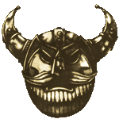

| |
Az Alagútharcos
Karrier leírás Warhammer Fantasy
Roleplay-hez.
Amikor a Káosz elözönlötte
Óvilágot, rövid idõ alatt a Világvége hegység
törpelakta szirtjeit és barlangjait is elérte.
Patkányemberek - vagy ahogy Óvilágon
ismeretesek - skavenek, orkok és goblinok törpevérre
szomjazó hordái szivárogtak be a hegység
barlangjaiba. Életük és lakhelyük védelmére
a legjobban képzett törpe harcosokat hadseregekbe
tömörítették és speciális földalatti
harcmodorra képezték ki. Ezek a bátor harcosok
szálltak szembe a törpe alagútrendszereket
megfertõzõ Káosz alantas teremtményeivel.
Harcmodoruk megköveteli a lõfegyverek használatát, hiszen a földalatti birodalmat jól ismerõ törpék
biztos rejtekhelyeikrõl, nyílpuskáik segítségével
iszonyú pusztítást vihetnek végbe az ellenséges
sorok között, az olyannyira kedvelt baltás, össznépi
roham elõtt. Az alagútharcos
kiemelkedõ,
ugyanakkor kellõen hétköznapi és szükséges karrier
ifjú törpék számára.
A legkiválóbb tájékozódási
képességgel rendelkezõ törpéket már serdülõ
korukban kiválasztják e nemes feladatra, hiszen
a legendák hevétõl túlfûtött ifjú agyuk
nagyon hamar befogadja a goblinoidok megölésének
és kínzásának sokszínû módozatait. Ezután
vidám tájékozódási verseny keretében
megismertetik az újoncokkal a helyi
barlanglabirintust, melynek következtében a
gyengébbek általában egy-egy kisebb szakadékban
végzik. Ezzel párhuzamosan fejlesztik a törpe
általános és céllövõ harci képességeit. Az
eredmény egy rendkívül szívós, mind harcban,
mind tájékozódásban jártas törpe harcos, aki
bármilyen földalatti csatában bevethetõ.
Az alagútharcosok igen büszkék
foglalkozásukra, éppen ezért megvetéssel
kezelik azt a néhány embert és félszerzetet,
aki zsoldosként, törpe kincsek után kutatva járja
az elfeledett tárnákat.
Az alagútharcosok közül sokan választják
a rövid, heves élettel és gyors, erõszakos halállal
járó "nemzeti karriert": a különféle
ölõ (troll, óriás) foglalkozásokat, így
meglehetõsen korán felveszik a törpe hõsökre
jellemzõ mogorva külsõt. Különféle áldozataik
lecsupaszított testrészeit aggatják páncélzatukra
és hajukat a lehetõ legrikítóbb színekre
festik (többnyire narancssárgára).
Óvilág egyik
legismertebb, ezt a pályafutást végzõ törpéje
minden bizonnyal Khitomer. Õ is, mint annyi más
önjelölt törpe szuperhõs, egyszerû, hétköznapi
törpicsekként kezdte karrierjét, valahol a Világvége
hegység szél és esõkoptatta bércei közt.
Hamar bekerült az alagútharcosok sorába,
ugyanis tökéletesen tájékozódott söröskupával
a kezében, legyen bármilyen sötét
vagy
furfangos a sziklalabirintus. Ami a lõfegyveres
kiképzést illeti, sokáig nem tudott megbarátkozni
a nyílpuskával, inkább bunkóként használta
szõrös mancsával. Ám szûkség ostobaságot
bont, így egy helyre kis csata során, ahol az
ellenfél inkább a lõpárbajt részesítette elõnyben,
örök életére megszokta a nyílpuska
kezelését.

Ezután ígéretesen fejlõdött
karrierje és személyisége. Egy óriási
barlangcsata során, ahol elõször találkozott
skavenekkel, egy csapat trollölõ mentette meg az
alagútharcosok kicsiny bandáját az enyészettõl.
Az ezt követõ tivornyán az ifjú Khitomer áhítattal
nézte a trollölõk rõtnarancs hajzatát és
információra éhesen, mohón hallgatta történeteiket
a külvilágról. A kalandok beindították a fantáziáját
és ahogy elég szõrös lett ahhoz, hogy felnõttnek
számítson, összeszedte kicsiny motyóját és
úttalan járatokon át kijutott a szabad ég alá.
Ez volt az elsõ lépés a siker vérrögös útján,
melynek elsõ állomásaként ételhordnok lett a
Joseph Bugman által alapított sörfõzõlánc
egyik kocsmájában. Ám egy szép napon "barátságos"
ork banda kezdte dúlni a környéket. A felkutatásukra
és elpusztításukra felbérelt helyre kis
csapatban helyet kapott Khitomer is. Képzettségeinek
igen nagy hasznát vette, mikor egy régi bányalejáratban,
az oda menekült orkokat levadászva, szembetalálták
magukat egy Káoszdémonnal. No meg pár tucat
goblinnal, akik ördögi mágiával és egyéb
praktikákkal a környék romlására törtek.
Hosszas küzdelem után, melynek szentségtelen részleteit
emberi elme fel nem foghatja, Khitomer és néhány
életbenmaradt társa gyõzedelmeskedett. A
jutalom nem maradt el. Egyrészt az orkok által
összerabolt kincsekbõl igen szép vagyonra
tettek szert, ráadásul a démon legyakásának híre
Altdorfot, a császár székhelyét is elérte. Így
meghívást kaptak õfelsége Karl Frantz udvarába.
Persze a császári udvar testületileg meglepõdött,
mikor a szakállas, narancssárga tarajú páncélkocka,
vállán két goblinkoponyával, kezében óriási
csatabárddal az uralkodó színe elé lépett.
Azt már meg se említem, hogy úgy bûzlött a sörtõl,
mint egy Bugman szeszkazán...
Így történt tehát, hogy
Khitomer ifjan megdicsõült és mivel a hírnév
kötelez, elindult, hogy megismerje az Óvilágot
és bosszút álljon a Káoszon, ugyanis a démon
karmainak köszönheti elsõ nagyhírû borotválkozását.
Jóllehet késõbb még elkövette ezt a szerencsétlen
tettet egy fekete ork (csinos sisak lett a búrájából)
illetve nemrég néhány tréfás goblin.
És most álljon itt egy
kis ízelítõ hõsünk botcsinálta költõi
munkáiból, mely nemes rímekkel teli
csatadalokat a harc hevében és teljes alkoholmámorban
szokott ordítani.
|
Az élet értelme
|
| |
| Kicsi vagyok nagy a baltám |
| Jól vágja az Orkok nyakán |
| az inakat és ereket! |
| |
| És, ha épp most nem gyakok |
| kocsmapulton mulatok |
| s vedelem a Bugman sört! |
| |
| Az én baltám k..v..a éles |
| a halálod nem kétséges |
| saját dugádba dõlsz... |
(és így tovább 300
soron keresztül...)
Warhammer Fantasy Roleplay
karakterjellemzõk és fejlõdési táblázat:
Csak törpe karaktereknek!*
| |
M
|
Ws
|
Bs
|
S
|
T
|
W
|
I
|
A
|
Dex
|
Ld |
Int |
Cl |
Wp |
Fel |
| Alagútharcos |
|
+10 |
|
+1 |
+1 |
+2 |
+10 |
+1 |
|
+10 |
|
+10 |
|
|
Képzettségek / Skills: Hárítás,
Meredek felületek megmászása, Tájékozódás
(csak föld alatt), Erõteljes ütés, Ártó
támadás, Eszméletlenséget okozó ütés
(Dodge blow, Orientation (underground
only), Scale sheer surface, Strike
mighty blow, Strike to injure, Strike
to stun)
Felszerelés / Trappings: Mászóhorog
és 10 yard Kötél, Pajzs, Páncél,
Nyílpuska és lõszer, Flaska
(Grappling hook and 10 yards of Rope,
Shield, Mail coat, Crossbow and
ammunition, Water flask)
Karrier kijáratok / Career
exits: Aknász, Csempész, Sírrabló
(Sapper (dwarfs only), Smuggler,
Tomb robber)
írta: Garth (Troll melléklet,
Holdtölte magazin 4. évf. 4. szám)
(* Ez természetesen inkább
javaslat, mint szabály! Igaz, hogy ez egy
jellegzetesen törpe foglalkozás, de megfelelõ
elõtörténettel természetesen bárki felveheti,
ha a GM ezt engedélyezi! - Rince)
|
|